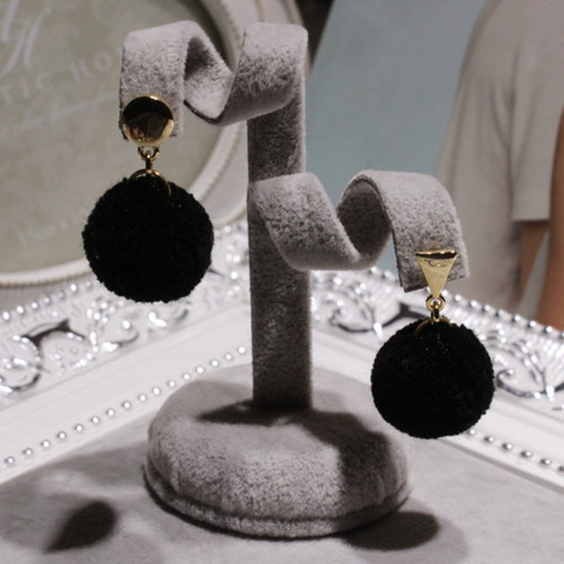

Auskarai į bambą internetu
- Auskarai su pusbrangiais akmenimis | Sidabro auskarai
Elegantiški ir išskirtiniai Tomas Gold sidabriniai auskarai yra gaminami kruopščių juvelyrų rankomis ir tik iš aukščiausios kokybės medžiagų. Maži ar dideli sidabriniai auskarai visada derės prie jūsų aprangos ir tiks bet kuriai progai. Sidabriniai auskarai suteiks jūsų įvaizdžiui išskirtinę natą ir sukurs harmonijos jausmą. - Auskarai - Decomundo
Auskarai su briliantais – tai universali dovana, kurią populiaru pirkti bet kurio amžiaus merginai ar moteriai. Nesvarbu, ar tai dovana krikšto dukrai, dukrai, žmonai ar motinai – iškilminga proga įteikiami auskarai su deimantais yra didelė vertybė, kuri gali būti perleidžiama iš kartos į kartą ir ilgus metus džiuginti ne ... - Auksiniai auskarai | ziedelis.lt
Mažyčiai ar ilgi, žėrintys ar matiniai, iš sidabro ar aukso – rankų darbo dailieji auskarai užkariaus kiekvienos moters širdį. Šie itin subtiliai atrodantys papuošalai gimė tam, kad skleistų džiugesį – rankų darbo auskarai taps nuostabia dovana ir jaunai merginai, ir per gyvenimą užtikrintai žengiančiai moteriai, ir elegantiškajai mamai, ir solidžiai senelei. - Auskarai su deimantais, briliantais (auksiniai) | Aukso ...
Auskarai - bene populiariausia papuošalų rūšis. Jie būdingi visoms kultūroms ir kraštams. Šiais laikais ausis prasiduria ne tik merginos, bet ir vaikinai, o auskarų kolekcijoje dažniausiai galima rasti tai, kas atspindi nuotaiką ar tiesiog tinka prie rūbų. - Auskarai - Norų Namai
Aukštos kokybės auksiniai ir sidabriniai auskarai internetu užsakomi greitai ir patogiai, pristatomi patikimai ir greitai. Pasirinkimo gausa Jus nustebins! Rasite ir kuklių, santūrių auskarų ir puoštų cirkoniu, turkiu, opalu bei kitais akmenimis. - Trollbeads | Auskarai internetu - Trollbeads.lt
Auskarai su briliantais atrodo nepaprastai įspūdingai, jie tiks įvairioms progoms, prie skirtingų drabužių derinių. Segint auskarus su briliantais kitų papuošalų nė nereikia, nes briliantų spindesys bus esminis akcentas moters įvaizdyje, kurio nereikia papildyti niekuo kitu. Auksiniai auskarai su brangakmeniais žavi savo ... - Auksiniai auskarai, Balto aukso auskarai, raudono aukso ...
Auskarai internetu. Auskarai puošia žmogaus veidą nuo neatmenamų laikų. Dar prieš 7000 metų jie jau buvo populiarūs senovės Azijoje – tiesa, daugiau kaip vyrų papuošalas. Egiptiečiai ir asirai auskarais demonstruodavo savo priklausymą aukštesnei gyventojų klasei. - Auskarai - auksaspigiau.lt
Auksiniai auskarai, pakabukai, žiedai, grandinėlės, apyrankės, pakabukai. Gavome siutinuką, labai gražūs papuošaliukai. Ačiu Jums labai , butinai ... - Gintaro auskarai internetu | saniston.com
Auskarai – vienas populiariausių moteriškų papuošalų. Auskarai – mediniai, sidabriniai ar pagaminti iš metalo papuošalai žinomi ir nešiojami jau daugybę metų, tačiau vis dar nepraranda savo nuostabaus žavesio. Šie papuošalai suteikia žavesio ir pasitikėjimo savo grožiu. - Auskarai į bambą internetu - Puosnidama.lt
Auskarai iš balto,raudono, geltono aukso internetu. Visus juvelyrinius dirbinius galite apžiūrėti pardavimo vietose ar siunčiame paštu. Grąžinimo garantija 14 d

8 675 83025 Kontaktai Apie mus Pristatymas Apmokėjimas Prekių grąžinimas Privatumo politika Taisyklės Mano paskyra Registruotis Prisijungti Pamiršote slaptažodį?
Jūsų krepšelis tuščias!
Prekės Auskarai Visi auskarai Auskarai ant ausies Auskarai į bambą Auskarai per visą ausį Auskarai pirsingui Ilgi, kabantys Magnetiniai auskarai Rinkės Tinkantys vaikams DIDI auskarai Dovanų dėžutės, maišeliai Rodyti viską Auskarai Kaklo papuošalai Pakabukai Grandinėlės Dovanų dėžutės, maišeliai Rodyti viską Kaklo papuošalai Apyrankės Apyrankės Apyrankės poroms Dovanų dėžutės, maišeliai Rodyti viską Apyrankės Žiedai Žiedai Dovanų dėžutės, maišeliai Rodyti viską Žiedai Papuošalų rinkiniai Laikrodžiai Auskarai Auskarai į bambą El. parduotuvėje Puosnidama.lt veikia Lojalumo Programa , kurios dėka galite gauti Lojalumo Eurus.
Lojalumo Eurai - tai 10 procentų užsakymo sumos Eurai, kurie automatiškai panaudojami kitam užsakymui.
Auskarai į bambą Juodukai
Medžiaga - medicininis plienas. Juodos spalvos. Kojelės ilgis - 11 mm. Didžiojo akmenėlio skersmuo - 8 mm, mažojo - 5 mm. ..
4.60€
Į krepšelįAuskarai į bambą Puošnus grožis I
Medžiaga - medicininis plienas. Sidabro spalvos. Kojelės ilgis - 12 mm. Skersmuo - 13 mm. ..
7.70€
Į krepšelįAuskarai į bambą Saulės bučinys
Medžiaga - medicininis plienas. Švelnios aukso spalvos, žvilgantis subtiliais smulkiais blizgučiais. Kojelės ilgis - 12 mm. Mažojo akmenėlio skersmuo - 4,5 mm. Didžiojo akmenėlio skersmuo - 8 mm. ..
5.30€
Į krepšelįAuskarai į bambą Sidabro rutuliukai
Medžiaga - medicininis plienas. Sidabro spalvos. Kojelės ilgis - 12 mm. Didžiojo akmenėlio skersmuo - 8 mm, mažojo - 5 mm. Atsisuka didesnis rutuliukas...
4.30€
Į krepšelįAuskarai į bambą Skaidrus juodukas
1 vnt. Kojelės medžiaga - medicininis plienas. Permatomi rutuliukai su daug smulkių juodos spalvos dalelių ir šviesių burbuliukų. Kojelės ilgis - 12 mm. Mažojo akmenėlio skersmuo - 4,5 mm. Didžiojo akmenėlio skersmuo - 7 mm. ..
4.60€
Į krepšelįAuskarai į bambą Skaidrūs kristalai
Medžiaga - medicininis plienas. Sidabro spalvos. Kojelės ilgis - 11 mm. Mažojo akmenėlio skersmuo - 4,5 mm. Didžiojo akmenėlio skersmuo - 8 mm. ..
5.20€
Į krepšelįAuskarai į bambą Žiedeliai
Medžiaga - medicininis plienas. Raudono aukso spalvos. Bendras ilgis - 31 mm. Gėlės skersmuo - 19 mm. 1 vnt. ..
5.40€
Į krepšelįAuskarai į bambą Žvilgantis juodukas
Medžiaga - medicininis plienas. Juodos spalvos, žvilgantis subtiliais smulkiais blizgučiais. Kojelės ilgis - 12 mm. Mažojo akmenėlio skersmuo - 4,5 mm. Didžiojo akmenėlio skersmuo - 8 mm. ..
5.20€
Į krepšelįAuskarai į bambą Angelo sparnas
Medžiaga - medicininis plienas. Sidabro spalvos. Bendras ilgis - 52 mm; sparno ilgis - 22 mm. 1 vnt...
6.20€
Į krepšelįAuskarai į bambą Balta gėlė
Auskaras į bambą. Medžiaga - medicininis plienas. Aukso spalvos. Bendras ilgis - 26 mm. Gėlės skersmuo - 14 mm. ..
5.30€
Į krepšelįAuskarai į bambą Blizgus melsvumas
1 vnt. Kojelės medžiaga - medicininis plienas. Permatomi rutuliukai su daug smulkių tamsiai mėlynos spalvos dalelių ir šviesių burbuliukų. Kojelės ilgis - 12 mm. Mažojo akmenėlio skersmuo - 4,5 mm. Didžiojo akmenėlio skersmuo - 7 mm. ..
4.60€
Į krepšelįAuskarai į bambą Drugelis
Medžiaga - medicininis plienas. Aukso spalvos. Bendras ilgis - 49 mm. Ilgis nuo viršutinio akmenėlio - 35 mm. 1 vnt...
5.30€
Į krepšelįAuskarai į bambą Elegantiška gėlytė
Medžiaga - medicininis plienas. Aukso spalvos. Bendras ilgis - 63 mm. Ilgis nuo viršutinio akmenėlio - 48 mm. 1 vnt...
5.50€
Į krepšelįAuskarai į bambą Juodas akmenėlis
Medžiaga - medicininis plienas. Sidabro spalvos. Kojelės ilgis - 12 mm. Juodo akmenėlio skersmuo - 8 mm, šviesaus - 4,5 mm. Juodą akmenėlį laiko ne trys, o keturi laikikliukai. ..
5.20€
Į krepšelįAuskarai į bambą Puošni gėlelė
Medžiaga - medicininis metalas. Aukso spalvos. Bendras ilgis - 27 mm. Gėlės skersmuo - 13 mm. ..
5.90€
Į krepšelįAuskarai į bambą Rožinės žvaigždutės
Medžiaga - medicininis metalas. Aukso spalvos su šviesiai rožiniais akmenėliais. Bendras ilgis - 45 mm. Žvaigždučių skersmuo - 10 mm. Tai originalus modelis su trimis subtilios spalvos žvaigždutėmis, kurios pavergs ir išrankiausią pirkėją. ..
5.80€
Į krepšelįAuskarai į bambą Rožiniai akmenėliai
Auskaras į bambą. Medžiaga - medicininis plienas. Sidabro spalvos. Kojelės ilgis - 11 mm. Mažojo akmenėlio skersmuo - 5 mm. Didžiojo akmenėlio skersmuo - 8,5 mm. ..
4.80€
Į krepšelįAuskarai į bambą Saulėlydžio žara
Medžiaga - medicininis plienas. Raudono aukso spalvos, žvilgantis subtiliais smulkiais blizgučiais. Kojelės ilgis - 12 mm. Mažojo akmenėlio skersmuo - 4,5 mm. Didžiojo akmenėlio skersmuo - 8 mm. ..
5.20€
Į krepšelįAuskarai į bambą Sidabro žiedeliai
Medžiaga - medicininis plienas. Sidabro spalvos. Kojelės ilgis - 12 mm. Gėlės skersmuo - 18 mm. ..
5.40€
Į krepšelįAuskarai į bambą Subtilus blizgėjimas
Kojelės medžiaga - medicininis plienas. Permatomi rutuliukai su daug smulkių švelniai rožinės spalvos blizgučių. Kojelės ilgis - 12 mm. Mažojo akmenėlio skersmuo - 4,5 mm. Didžiojo akmenėlio skersmuo - 7 mm. ..
4.60€
Į krepšelįAuskarai į bambą Šviesus blizgėjimas
Kojelės medžiaga - medicininis plienas. Permatomi rutuliukai su daug smulkių baltų blizgučių. Kojelės ilgis - 12 mm. Mažojo akmenėlio skersmuo - 4,5 mm. Didžiojo akmenėlio skersmuo - 7 mm. ..
4.60€
Į krepšelįAuskarai į bambą Tamsus drugelis
Medžiaga - medicininis plienas. Juodos spalvos. Drugelio viduryje - šiek tiek rožinės spalvos, sparnai - švelniai žali. Bendras ilgis - 39 mm. Drugelio skersmuo - 11-20 mm. ..
5.30€
Į krepšelįAuskarai į bambą Vilionė
Medžiaga - medicininis plienas. Aukso spalvos. Bendras ilgis - 59 mm. ..
5.20€
Į krepšelįAuskarai į bambą Blizgesys
Medžiaga - medicininis plienas. Tamsiai geltonos spalvos su žvilgančiais cirkonio kristaliukais. Kojelės ilgis - 12 mm. Mažojo akmenėlio skersmuo - 4 mm. Didžiojo akmenėlio skersmuo - 7 mm. ..
4.30€
Į krepšelįAuskarai į bambą Kristalų gėlelė
Auskaras į bambą. Medžiaga - medicininis plienas. Sidabro spalvos. Bendras ilgis - 33 mm. Gėlės skersmuo - 16 mm. ..
5.20€
Į krepšelįAuskarai į bambą Rožinė širdelė
Medžiaga - medicininis plienas. Sidabro spalvos. Bendras ilgis - 45 mm. 1 vnt...
5.20€
Į krepšelįAuskarai į bambą Sidabro gėlelė
Medžiaga - medicininis plienas. Sidabro spalvos. Bendras ilgis - 43 mm. Didžiausios gėlės skersmuo - 13 mm. ..
5.20€
Į krepšelįAuskarai į bambą Vilionė
Medžiaga - medicininis plienas. Aukso spalvos. Bendras ilgis - 56 mm. Ilgis nuo viršutinio akmenėlio - 41 mm. 1 vnt...
5.20€
Į krepšelįAuskarai į bambą Aukso kristalai
Medžiaga - aukštos kokybės medicininis plienas. Aukso spalvos. Bendras ilgis - 72 mm. ..
4.90€
Į krepšelįAuskarai į bambą Bitch
Medžiaga - medicininis plienas. Sidabro spalvos. Bendras ilgis - 35 mm. Dėmesio: visi akmenėliai yra švelniai rožinės spalvos, ne tokie ryškūs kaip nuotraukoje...
4.00€
Į krepšelį Rodoma nuo 1 iki 30 iš 30 (1 puslapių)Informacija
Apie mus
Pristatymas
Apmokėjimas
Prekių grąžinimas
Privatumo politika
Taisyklės
Svetainės žemėlapis
Kontaktai
Elektroninis ginčų sprendimas
Mano paskyra
Mano kontaktinė informacija
Adresų knyga
Slaptažodis
Užsakymų istorija
Norų sąrašas
Puosnidama.lt © 2018

Mauris vulputate dolor
Rutrum fermentum nibh in augue praesent urna congue rutrum.
Etiam posuere